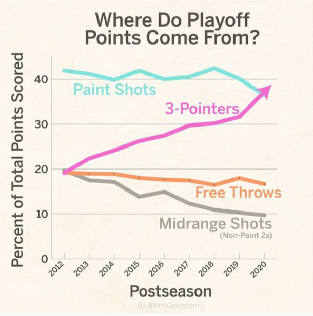
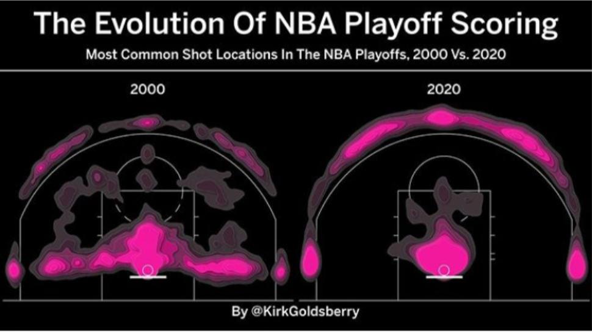
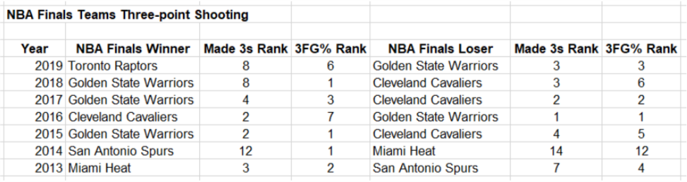
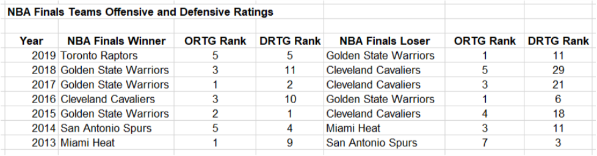

Blog
NBA Draft Logo from NBA.com + CouchGM Illustration
NBA Draft 101
By Zach Hales, CouchGM on September 11, 2020This series will discuss the basics of NBA draft strategy. This article, NBA Draft 101, will cover the skills that should be prioritized when evaluating NBA draft prospects.
There are several schools of thought when it comes to the NBA Draft. Should you take the best player available, regardless of position, or the player that best fits with your current roster? Should you swing for potential or take a “safe” player? Before you can make those decisions, though, you first need to be able to evaluate players.
I propose that there are three skills that are most important when evaluating players. These are, in order of priority:
1. Three-point shooting
2. Shot-creation
3. Defense
Why those three, and why in this order?
There are two common sayings in sports: “Defense wins championships,” and “Good offense beats good defense.” As will be discussed below, the first doesn’t hold true as much as the second. But, spoiler alert, defense isn’t worthless either. This is why the two offensive skills are prioritized higher than defense.
A recent article by Kirk Goldsberry on ESPN addresses the need for three-point shooting in the playoffs. In summary, the proportion of shots that are taken from three-point range has increased from 27.9% of all shots in 2013-2014 to 43.4% of all shots in 2019-2020. In 2019-2020, for the first time in NBA history, more points have been scored by three-pointers than by shots in the paint. (Two graphics below by @KirkGoldsberry)
 As stated by Goldsberry, “The game has changed, and if you can't shoot 3s, you can't win playoff games,” and, “Make your 3s or watch your season come crumbling to dust.”
Taking a look at recent NBA Finals winners and runners-up, we see trends in their three-point shooting ability. Stats since the 2013 NBA Finals are shown below and were compiled from NBA.com.
Every year since 2013, the NBA Champion has been ranked no worse than 7th in the league in three-point percentage and 5 out of the last 7 NBA Champions have been ranked in the top-3 in three-point percentage. 5 out of the last 7 NBA Finals losers have been ranked in the top-5 in three-point percentage. A similar pattern is seen for made threes: 6 out of the last 7 NBA Champions AND NBA Finals losers have ranked inside the top-10 in three-point makes. The 2014 NBA Finals is the outlier of the last 7 seasons, with both teams outside the top-10 in makes. But the 2014 NBA Champion San Antonio Spurs ranked #1 in three-point percentage.
As for individual players, guys like Kyle Korver (16 years), JJ Redick (13 years), and Vince Carter (21 years) have played/are playing over a decade in the NBA because they can shoot.
So if you want to find success in the playoffs, or if you want to play in the league for a long time, you need to be able to shoot the three with volume and accuracy. And three-point shooting comes in at #1 on the list.
Obviously making shots is important, but making shots becomes much easier when a player can create open shots. There also often come times when an offense slows down or when the game is on the line and the team just needs a bucket. These are the times when you want a player that can consistently create shots either for himself

or for a teammate.

So shot-creation is #2 on the list.
If we look broader than just three-point shooting to overall offense, the table below shows how NBA Finals teams rate league wide on offense (ORTG = Offensive Rating: points scored per 100 possessions), per NBA.com. We’ll also look at defense (DRTG = Defensive Rating: points allowed per 100 possessions).
Over the last seven seasons, the NBA champion has had a top-5 offense every year and a top-10 defense 6 out of 7 years, with the one exception being the 2018 Golden State Warriors, who ranked #11. The trend is that to win the NBA championship, you need a top-5 offense and a top-10 defense.
The Finals loser has had a top-5 offense 6 out of 7 years, with the one exception being the 2013 San Antonio Spurs, who ranked #7. Notice, though, that there are a few instances of the Finals loser being in the bottom half (ranked 15-30) of the league on defense. The implication is that it is possible to make the Finals with a good offense and a bad defense, but the reverse (bad offense and good defense) is never true.
It takes a top-10 defense to win a championship. But offense is relatively more important, with the requirement being a top-5 offense. They say that defense wins championships, but we see that this is not true. Good offense beats good defense. This is why defense, while still important, is the #3 priority behind two offensive skills.
I'd look for players that are already good OR that have the potential to be good at these skills and preferably at more than one of these skills. Basic and Advanced stats are a pretty good way to tell who is good now. Deeper evaluation is required to determine who has the potential to improve at these skills.
For shooting, look for good shooting form as one indicator and good touch on floaters as another. For team-creation, look at the kinds of passes the player makes. Does he always make the obvious pass, or is he thinking a step ahead? Can he pass with both hands? For self-creation, look at the player's handle and if he can create separation from the defender. Does he have a go-to move? On defense, watch for how hard the player competes. Is he involved even when he is defending away from the ball? Can he affect a shot without fouling? Does he draw charges and cause deflections?
The more the players can do the better they will be. Players that can do both (1) and (2) are the all-stars (Steph Curry, Damian Lillard, Kevin Durant etc.) and secondary scorers (CJ McCollum, Khris Middleton, Lou Williams, etc). Players that can do both (1) and (3) are the 3&D role players (Danny Green). Players that can do (2) and (3) COULD be star players (Giannis Antetokounmpo) if they are REALLY good, but they are more likely to be role players (Ricky Rubio, Rajon Rondo). The floor is lower for players that can't shoot. Of course, there is a range of possible outcomes with each skill grouping. But good three-point shooting raises the player's floor and ceiling more than any of the other skills.
At the very top of the draft (top-4 picks), I would be looking for a star player. From there to the end of the lottery, I would be looking for a starter/high end role player in one of two molds: a secondary scorer or a 3&D player . Outside the lottery, I would look for a player that has any one of the three skills.
To review, look first for three-point shooing, second for shot-creation, and third for defense.
back to blogFeatured Post

Can Devin Booker be the best player on a championship team?
By Zach Hales, CouchGM on September 4, 2020What does it take to be the best player on an NBA championship-level team? Does Devin Booker have what it takes? Take a look at past NBA Finals teams and see what their best players have in common.
Read More